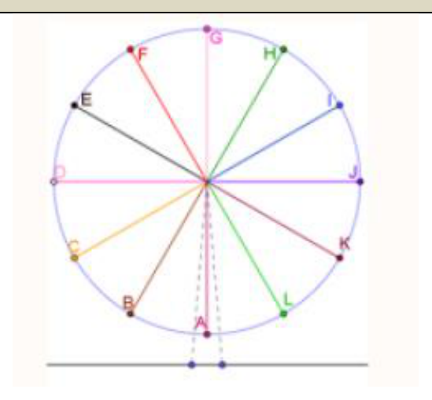

אלגברה לכיתה ח'
7
2
מיני גלגל ענק ובו 12 תאים במרחקים שווים. קוטר הגלגל 10 מ', והוא נמצא בגובה מטר אחד מעל פני האדמה. אמיר עלה והתיישב בתא A שבתחתית הגלגל. לפניכם סקיצה של הגלגל וגרף המתאר את הגובה h של אמיר מעל פני האדמה כפונקציה של הזמן t במשך סיבוב אחד:

- א.מה הגובה ההתחלתי של אמיר?מ'